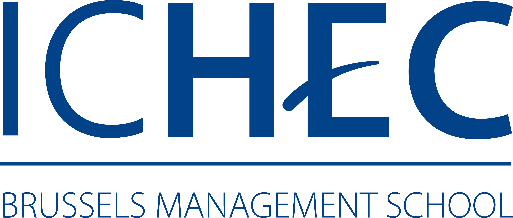
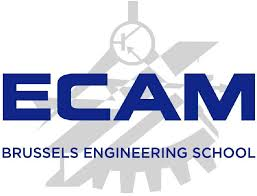

Mon parcours académique
Diplômée en International Business avec une spécialisation en Supply Chain à l'EPHEC en 2024, j'entame actuellement un master en Business Analyst en alternance.
Institut de la Providence : Tourisme

EPHEC : International Business
ICHEC/ECAM : Master en B. Analyst
Un peu plus sur mon parcours actuel
Le master en Business Analyst en alternance combine l'aspect pratique et théorique. Il permet de
mettre en pratique les apprentissages théoriques vus en auditoire au sein d'une entreprise.
Grâce à la
collaboration entre l'ICHEC et l'ECAM, nous bénéficions d'un large éventail de cours techniques avec
l'ECAM, tandis que l'ICHEC se concentre sur des cours plus théoriques.
ICHEC :Brussels Management School
ECAM :brussels engineering school
Pour en découvrir plus sur mes compétences acquises, veuillez cliquer sur ce lien.